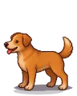

Wiki › Adversários › Cachorro Caramelo

Cachorro Caramelo
Nível 6 Brasil
- Fôlego
- ❤️ 48
- Ataque
- ⚔️ 12
- XP
- ⭐ 20
- Tostões
- 🪙 0–6
- Chuta de longe
- não
- Vem te desafiar
- sim
O que deixa cair
| Item | QuantidadeQtd. | Chance | Raridade |
|---|---|---|---|
| 1 | 40% | Comum | |
| 1–3 | 30% | Comum | |
| 1 | 15% | Comum | |
| 1 | 8,0% | Comum | |
| 1 | 7,0% | Comum | |
| 1 | 0,90% (1 em 111) | Lendário | |
| 1 | 0,02% (1 em 5.000) | Lendário | |
| 🎴Figurinha do álbum | 1 | 0,91% |
Como ler: a % é a chance de cair em cada adversário vencido. Se você estiver muito acima do nível dele, a chance diminui (6 a 9 níveis acima: 80%; 10 a 14: 40%; 15 a 19: 15%; 20 ou mais: nada). Item pedido por uma missão que você aceitou cai com a chance cheia.
Onde aparece
- Vila do Campinho — no meio do mapa (2 no mapa)
- 🎯 Bosque do Caramelo — no meio do mapa (10 no mapa)
- ☄️ Zona 1: Campinho Celeste (níveis 1–25) — no meio do mapa (2 no mapa)
Missões com este adversário
- Caramelo fujão (Nível 5)
- Caçada: Bosque do Caramelo (Nível 1)
- Grande Caçada: Bosque do Caramelo (Nível 4)
O que ele diz
Au au!
AU!
Grrr...